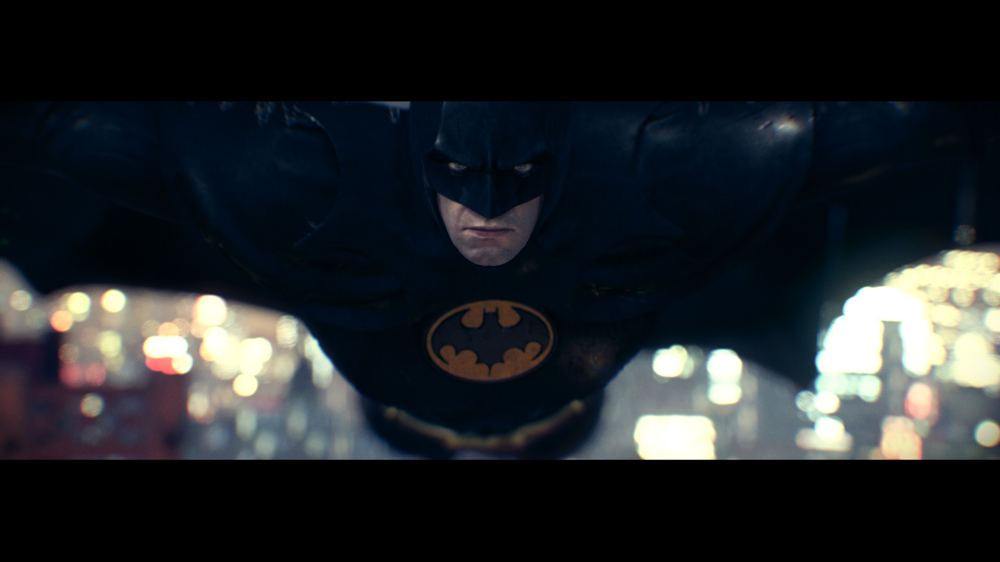

BatMan
The Dark Knight

自身能力
- 博学多识：布鲁斯的智慧使他成为了一名优秀的侦探、战略家、科学家、战术家和指挥官.
- 不屈意志：虽然布鲁斯没有超能力，但是他拥有所向披靡的不屈意志。
- 武术大师：作为地球上最强的人类武术大师，他精通世界上127种格斗术
- 侦探大师：布鲁斯被认为是世界上最好的侦探。他善于观察、善于研究法律，懂得推理演算，人类直觉在他身上运用的淋漓尽致，一点小线索也能让他揪出一件大秘密来。
- 战术大师：他擅长以智取胜，是团队领导的不二人选。
- 恐吓达人：蝙蝠侠擅长用恐惧感对付对手，即使不怕超人的恶棍也会对蝙蝠侠有所忌惮。他的这种恐吓能力使他有资格进入黄灯军团，不过他拒绝了。
- 审讯大师：蝙蝠侠是最好的审讯大师，他将法律和威逼利诱的手段发挥到极致。通常他最爱使用制造恐怖感来及垮对手的心理防线。他说过：“恐惧是最好的推动力”。
- 技巧大师：体操和技巧专家。
- 伪装大师：擅长各种身份的伪装。
- 遁逃大师：他的遁逃能力仅次于奇迹先生。
- 追踪大师：在非洲学习了猎人的追踪技术。
If you have time, you should read more about this incredible human being on his Wikipedia entry.